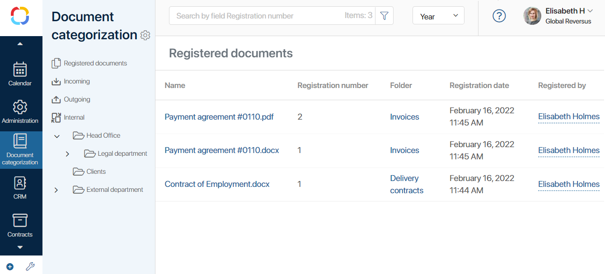
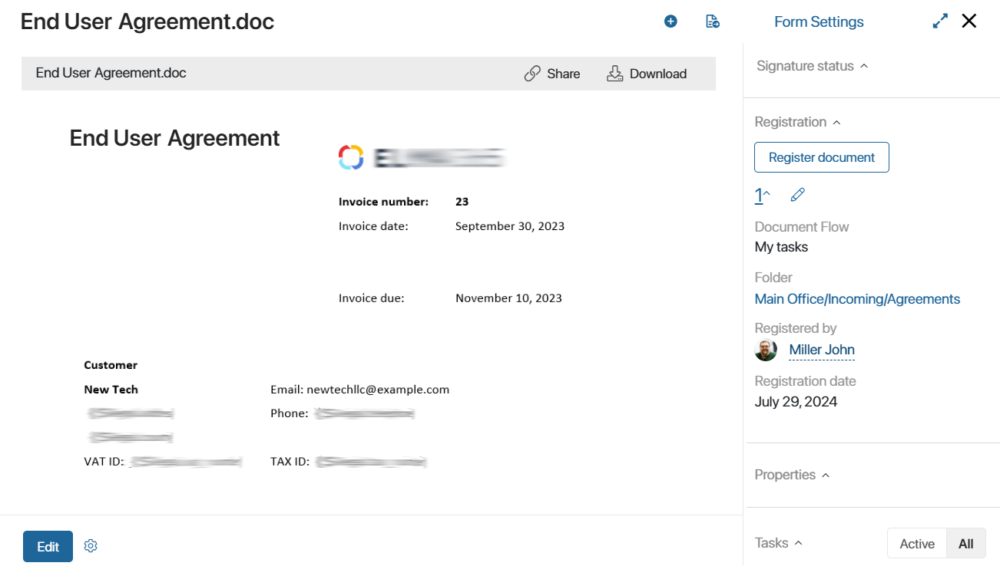
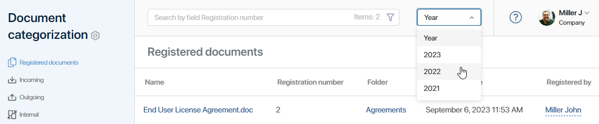

By default, document categorization consists of the document register and the Incoming, Outgoing, and Internal document flows. They allow you to conveniently sort the documents and make search easier.
The register shows all the registered documents of the company. When selecting a document flow in the left menu of the workspace, you will see only the documents registered in folders where this document flow is specified.
Below the document flows you can see offices, categories, and folders. They are created by the system administrator when configuring document categorization.

Offices represent your company’s divisions, branches, or departments for document registration.
In each office, you can create several categories. They help you sort the documents by departments, projects, or fields of work.
Offices and categories contain folders. All documents of the same type, e.g., contracts, invoices, or bills, are displayed in one folder.
To go to folder settings, click on the gear icon to the right of its name. In the provided window you can edit the name of the folder, change the document flow, and set up numbering. To learn more, see Document categorization and registration settings.
Document registration
For example, let’s consider an end user agreement stored in the Agreements app. Suppose it was created by the legal department in the main office.
To register the supply agreement:
- On the right panel of the document page, in the Registration section, click Register Document. A field will appear for selecting a folder according to the registration settings of the Agreements app.
- Select Main Office > Legal Department > Agreements folder. The registration number assigned to the contract when it was created will be displayed. The number is assigned according to the folder settings.
- Click Register Document.

The contract can also be registered in the course of a business process. You can either set up automatic registration or assign a task to an employee to register the document manually.
After registration, the registration number is displayed in the right panel of the document. By clicking on the number, you can expand the registration details: document flow, folder, executor, and registration date.

Find a registered document
There is a search field at the top of the page. You can search for documents by registration number. Enter the number on the field and all matching documents will be shown below.
Also, you can select a year to display only the document registered through that year.

Additionally, a search by parameters is available. To open it, click the  icon. A search form will appear.
icon. A search form will appear.
Here you can search by the File name, Registration number, Start date, and the Registered by system field. Enter the name of the user to view all the documents that are registered by that person. If you want to see all the documents you registered, select the Current user option.
By default, the number of items stored in the document categorization is not displayed in the search bar, and therefore the workspace page loads faster. To show the number of documents, enable the corresponding option in the user profile on the Document Management tab.
Found a typo? Select it and press Ctrl+Enter to send us feedback